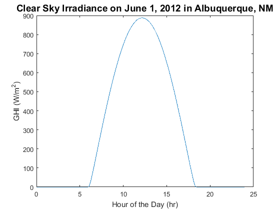

pvl_clearsky_haurwitz
Determine clear sky GHI from Haurwitz model
Contents
Syntax
[ClearSkyGHI]= pvl_clearsky_haurwitz(ApparentZenith)
Description
Implements the Haurwitz clear sky model for global horizontal irradiance (GHI) as presented in [1, 2]. A report on clear sky models found the Haurwitz model to have the best performance of models which require only zenith angle [3].
Inputs
- ApparentZenith - The apparent (refraction corrected) sun zenith angle in degrees.
Outputs
- ClearSkyGHI - the modeled global horizonal irradiance in W/m^2.
Initial implementation of this algorithm by Matthew Reno (Sandia and Georgia Tech).
Example
Location.latitude = 35.04; Location.longitude = -106.62; Location.altitude = 1619; % Create 1-min time series for Jan 1, 2012 DN = datenum(2012, 6,1):1/(24*60):datenum(2012, 6, 1, 23, 59, 59); Time = pvl_maketimestruct(DN, -7); [SunAz, SunEl, ApparentSunEl, SolarTime]=pvl_ephemeris(Time, Location); ApparentZenith = 90-ApparentSunEl; ClearSkyGHI = pvl_clearsky_haurwitz(ApparentZenith); dHr = Time.hour+Time.minute./60+Time.second./3600; % Calculate decimal hours for plotting figure plot(dHr,ClearSkyGHI) title('Clear Sky Irradiance on June 1, 2012 in Albuquerque, NM','FontSize',14) xlabel('Hour of the Day (hr)') ylabel('GHI (W/m^2)')
References
- [1] B. Haurwitz, "Insolation in Relation to Cloudiness and Cloud Density," Journal of Meteorology, vol. 2, pp. 154-166, 1945.
- [2] B. Haurwitz, "Insolation in Relation to Cloud Type," Journal of Meteorology, vol. 3, pp. 123-124, 1946.
- [3] M. Reno, C. Hansen, and J. Stein, "Global Horizontal Irradiance Clear Sky Models: Implementation and Analysis", Sandia National Laboratories, SAND2012-2389, 2012.
See also
pvl_maketimestruct , pvl_ephemeris , pvl_spa , pvl_makelocationstruct , pvl_clearsky_ineichen
Copyright 2014 Sandia National Laboratories